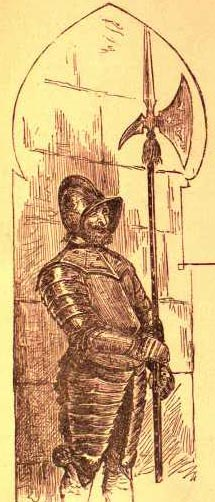
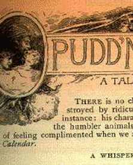
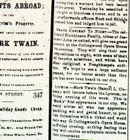
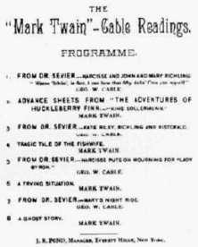

|
Measured against what we know as media hype, the
strategies MT and his publishers devised for calling
attention to his books seem pretty quiet. By the standards
of his time, however, MT believed in aggressively promoting
their sales. A reviewer
of Huck Finn, for example, could say that "no
book has been put on the market with more advertising."
|
|

|
Subscription publishers spent little money on
conventional newspaper or magazine advertisements, but MT and
his publishers did create various kinds of posters. These
were included in the prospectus, presumably to allow agents
graphically to illustrate their sales pitch. But such posters
also exist in unbound states, indicating that they were
distributed in other ways. Because the sales of Tom
Sawyer were so slow, for example, Bliss apparently sent
flyers to all the customers whose names and addresses he'd
acquired through earlier canvasses. And the Barrett
Collection has an advertising flyer
for Huck Finn printed by Occidental Publishing, the San
Francisco firm that handled west coast distribution for
Bliss. Except for the firm name, however, it's identical to
the poster bound into the prospectus, which confirms the
assumption that national publicity was controlled from
Hartford, and thus makes it likely that MT himself would have
usually known the details of each promotional campaign
(including, for example, the decision to insist that
Huck was written in "Mark Twain's old style," and was
above all a funny book). The four items about The Prince
and the Pauper here are from the Osgood & Co.
prospectus for the book, and display more graphic flair than
either Bliss's or Webster's posters.
|
|
 |
One of the less scrupulous practices of subscription
firms was to retitle a book from their backlist, and send
agents out to sell it again -- in some cases to people who
had already bought it. Because of this practice, MT felt it
increased the salability of a book to be able to say that
none of it had ever appeared in print before. Thus he was
reluctant at first to allow magazines to publish any part of
his novels in advance of their canvass. But Richard Gilder,
editor of The Century, talked him into pre-publishing parts of Huck
Finn in his magazine, and Huck became a
best-seller. This experience, and the growing need for cash,
led MT regularly to include magazine publication in his
marketing campaigns. Selections from Connecticut
Yankee appeared in a single installment, but all of
Pudd'nhead Wilson, and many of the other late works,
were pre-published in serial installments. |
|

|
Across the course of his career MT and his publishers
discovered other ways to promote a new book. MT was a popular
lecturer before he was a publishing author, and performed in
front of live audiences for many reasons. But beginning with
his first major eastern tour, "The American Vandal Abroad,"
which was "smouched" from the text of Innocents, MT
realized how a speaking tour could help advertise and sell
his books. On 7 January 1869, in the midst of that tour, he
advised Bliss to "issue prospectuses and startling
advertisements now while I am stirring the bowels of these
communities." This seems to anticipate the idea of a modern
"book promotion tour." Bliss was unprepared to coordinate
publishing and live appearances in such a fashion, but
occasionally, as when MT was lecturing on "Our Fellow
Savages" in Poughkeepsie, a kind of
media blitz happened anyway. |
|

|
After touring each winter from 1868 to 1872, MT grew
tired of the demands of a season on the lecture circuit. But
he remained interested in using his public performances to
promote his books. His most successful lectures during the
1871-1872 season were drawn from Roughing It, which
was, as he could let audiences know, about to appear in
print. And in 1884 he returned to the lecture circuit in order to promote the publication of Huck
Finn by his own publishing company; during his multi-city tour with George Washington Cable
Cable he invariably performed selections from the novel. Programs for the performance often described these performances as "advance sheets"
from MT's forthcoming book. |

|
Another promotional device was "Pudd'nhead Wilson's
Calendar," brought out by the Century to help
advertise the serial appearance of the novel. The whole calendar, in two variant
forms, is in the Pudd'nhead Wilson section of the
archive. The signed copy of the calendar at left was a gift
from MT to Bram Stoker. In his signature, MT is making the
same identification many reviewers and readers also made --
between himself and Pudd'nhead. |